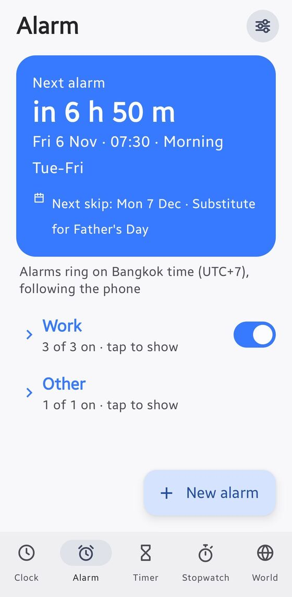
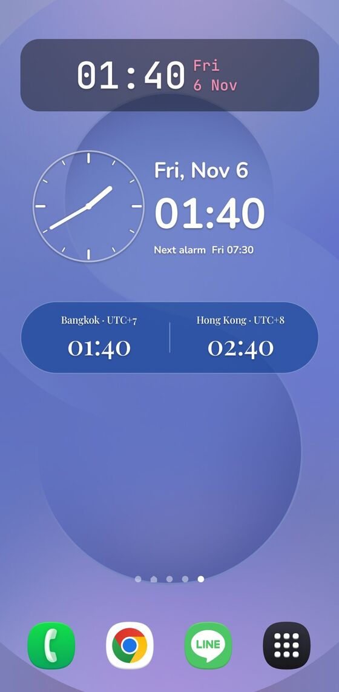
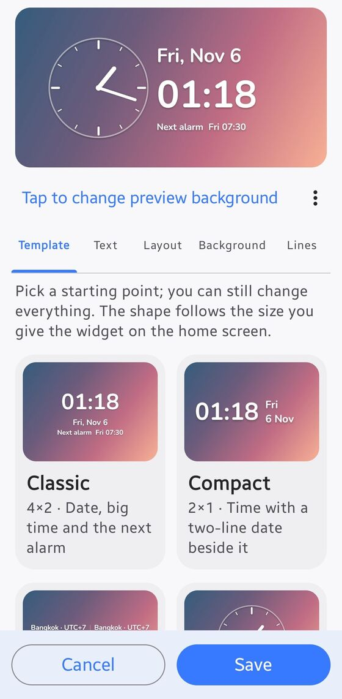
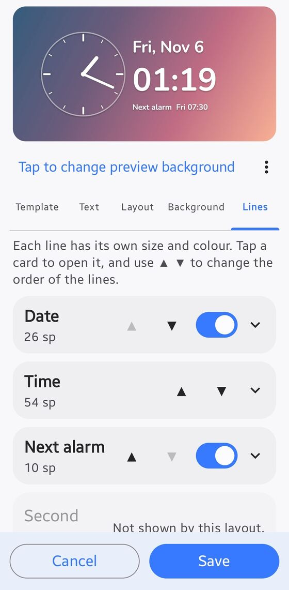
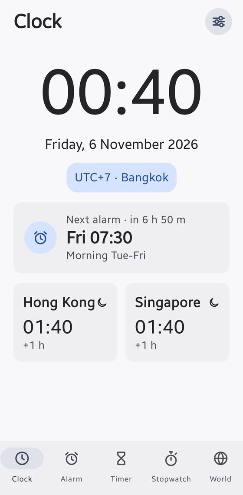
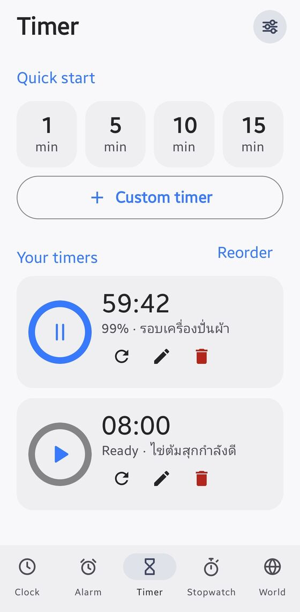
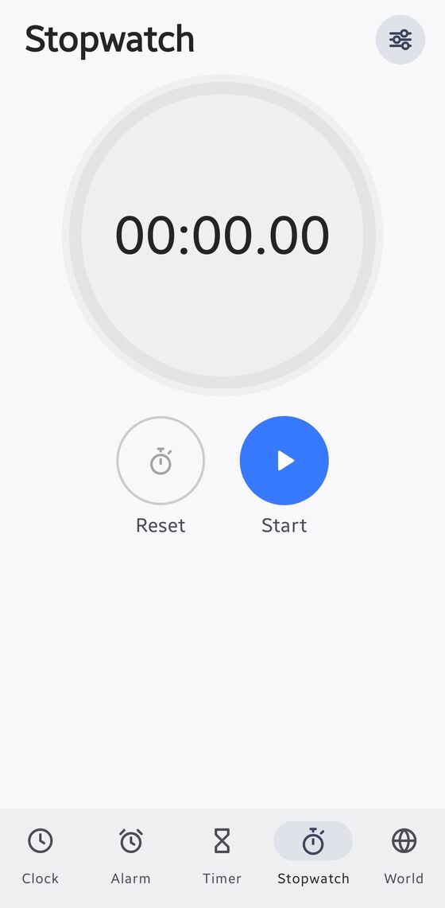
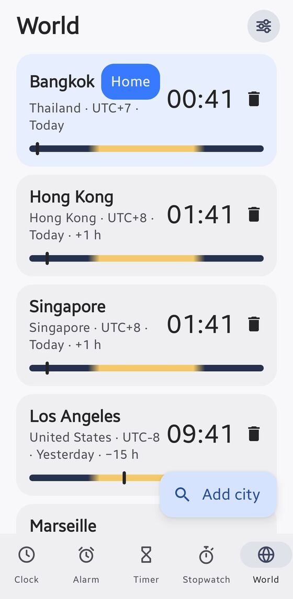

A clock widget without the seconds.
A fully offline Android clock: a home-screen widget you can style any way you like, alarms that skip public holidays and your own days off, timers, a stopwatch and a world clock.
Free and open source (MIT). Installs from GitHub, not the Play Store. How to install


- Works fully offline
- No INTERNET permission, checked in every build
- No account, no analytics
- Open source, MIT licensed
Built for one phone, done properly
It started as a replacement for a stock clock widget that began showing seconds. It grew into a small, private clock app.
Widget with no seconds
Eight templates, nine fonts, per-line size and colour, backgrounds, shadow, 12/24 hour, date, next alarm and a second city clock. Every placed widget has its own settings and a live preview.
Holiday-aware alarms
Work-schedule alarms that skip public holidays: Thai holidays are built in, any country works through your phone's holiday calendar, and you can add your own days off.
Timers and stopwatch
Run several timers at once, edit and reorder saved ones, and get a countdown notification. The stopwatch tracks laps and marks your best and slowest.
World clock
247 built-in cities, searchable by city or country, with the UTC offset and a day and night bar for each.
Rings when it should
Uses your own system ringtone on the alarm volume, shows full screen over the lock screen, with snooze and dismiss. Confirmed ringing with the screen off and after a reboot on a Galaxy S25+.
Private by design
No INTERNET permission, no account and no analytics. Backup and restore stay on your phone as a file you control.
Make the widget yours
Start from a template, then change anything. The editor shows exactly what the widget will look like, and the shape follows the size you give it on the home screen.
- Templates: Classic, Compact, Dual clock, Analog, Analog + digital, Big minimal, Date first, Alarm card
- Reorder Time, Date, Next alarm and Second clock, each with its own size and colour
- Soft, normal or strong shadow, frosted or solid backgrounds, adjustable opacity
- The time updates once a minute, never with seconds


See it in use
Five tabs, one gear for settings. Screenshots are from a Samsung Galaxy S25+.




Install in four steps
The app is not on the Play Store. You install the APK straight from GitHub.
Download the APK
Open this page on your phone and tap Download, or use the "Latest build" on the Releases page.
Allow unknown apps
When asked, allow installs from your browser, then install.
Fix Permission health
Open Settings, then Permission health. Fix each red row: exact alarms, notifications, full-screen alarm and battery Unrestricted. Calendar access is optional.
Add the widget
Long-press the home screen, choose Widgets, then Clock (no seconds).
New builds install over the old one and keep your alarms, because every build is signed with the same key.
Questions
Does it work on iPhone?
No. It is a native Android app. The widget, exact alarms and lock-screen ringing all use Android-only features.
Which phones does it need?
Android 12 or newer. It is designed and tested on a Samsung Galaxy S25+ with One UI, so Samsung phones are the best supported.
Can I use it outside Thailand?
Yes. Alarms can follow your phone's time zone, and holidays come from the matching holiday calendar on your phone, plus any custom days you add. Only Thailand has a built-in list.
Will updates keep my alarms?
Yes. Updates install over the existing app because every build is signed with the same key.
Does it need internet?
Never. The app has no INTERNET permission, and the build fails if that ever changes. This page also loads nothing from third parties.
Why must battery be set to Unrestricted?
Samsung's battery saver can put apps to sleep and delay alarms or stale the widget. Permission health inside the app lists exactly what to change.
Is it safe to install an APK from GitHub?
The full source is public, the build runs on GitHub Actions, and the permissions are minimal. You can read the code, or build it yourself.